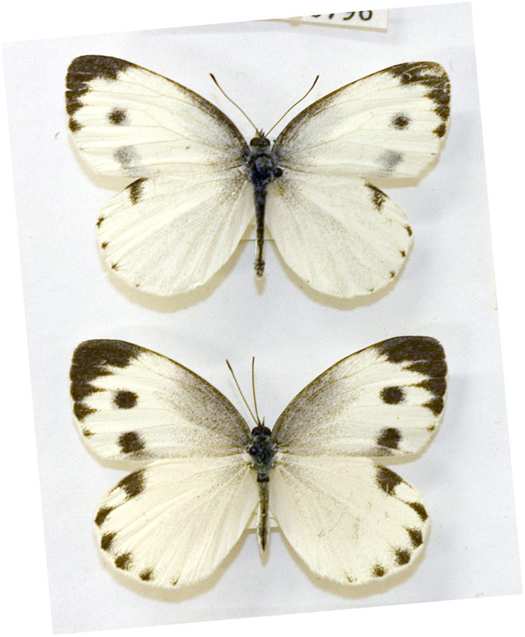

इंडियन कैबेज व्हाइट तितलीIndian Cabbage White
Pieris canidia · Pieridae · INS-0124

- Scientific name वैज्ञानिक नाम
- Pieris canidia (Stoll, 1790)
- Family कुल
- Pieridae
- Hindi हिंदी
- इंडियन कैबेज व्हाइट तितली
- Local names स्थानीय नाम
- indian cabbage white, white
- Status here यहाँ की स्थिति
- native
- Movement आवागमन
- Resident, here all year
- Known from कहाँ दर्ज
- Others have published records from the Basti–Ayodhya districts बस्ती–अयोध्या के ज़िलों से दूसरों के प्रकाशित अभिलेख
- IUCN IUCN
- not evaluated
- Review समीक्षा
- audited and independently read
When to look कब देखें
Present all year. साल भर मौजूद।
Tell it apart from इनसे अलग पहचानें
इंडियन कैबेज व्हाइट तितली / Indian Cabbage White
Pieris canidia (Stoll, 1790) — Pieridae
इंडियन कैबेज व्हाइट तितली — यह एक साधारण सफ़ेद तितली है जिसके पंखों पर काली धारियाँ और दाग़े होते हैं। इसके नर पंख पूरी तरह सफ़ेद होते हैं, जबकि मादा के पंखों पर दो काले धब्बे होते हैं। यह तितली पूर्वी उत्तर प्रदेश के सब्जियों के बागों, पत्तागोभी और सरसों की खेतों में आम तौर पर देखी जाती है। इसकी इल्ली (caterpillar) सब्जियों, विशेषकर पत्तागोभी, फूलगोभी और सरसों को नुकसान पहुँचाती है।
Quick Identification त्वरित पहचान
| Feature | Description |
|---|---|
| Wingspan | Medium; 48–60 mm |
| Ground color | White or cream |
| Male markings | Few or no black markings; mostly white |
| Female markings | Two black spots on forewing; grey underside with yellow tint |
| Forewing | Two black spots on costa (cost edge) in females; males lack these |
| Flight | Fast, erratic flight; stays low to medium height |
Field tip: Look for white butterflies in vegetable gardens and cabbage fields. Males are pure white and less marked; females have diagnostic black spots on wings. Common in Basti district's agricultural areas.
हिंदी — कैसे पहचानें: सफ़ेद पंख, नर पूरी तरह सफ़ेद, मादा पर काले दाग़े। पत्तागोभी के बागों में आम।
Morphology आकारिकी
Biometrics:
| Measurement | Range |
|---|---|
| Adult wingspan | 48–60 mm |
| Body length | 18–23 mm |
| Forewing length | 22–27 mm |
| Caterpillar length (mature) | 24–28 mm |
Adult butterfly: White or cream. Males are almost entirely white with minimal black markings. Females have two prominent black spots on the costa of the forewing, and the underside is pale yellow with dark spots. Sexual dimorphism is pronounced.
Caterpillar: Green, smooth, with yellow stripes, feeding on cruciferous vegetables.
Behaviour & Ecology व्यवहार और पारिस्थितिकी
The Indian Cabbage White is a fast, erratic flyer commonly seen in vegetable gardens, particularly where brassica crops are grown. It is attracted to cruciferous plants for egg-laying and visits a variety of flowers for nectar. The species is particularly abundant during the cool season (September–March) when brassica crops are being grown. It is a familiar insect in Basti district's agricultural landscape.
Life Cycle / Phenology जीवन चक्र
| Stage / Season | Event |
|---|---|
| Egg | Laid singly on brassica leaves; white; hatches in 3–5 days |
| Larva (caterpillar) | Green; passes through 4 instars; develops over 14–18 days |
| Pupa | Suspended chrysalis; white or green; emerges in 10–14 days |
| Adult | Year-round; peak September–March; multiple generations |
Host Plants or Prey आहार
Larval host plants (Cruciferae/Brassicaceae):
- Cabbage (Brassica oleracea var. capitata)
- Cauliflower (Brassica oleracea var. botrytis)
- Mustard (Brassica spp.)
- Radish (Raphanus sativus)
- Broccoli and other brassicas
Adult nectar sources:
- Garden flowers, wildflowers, and weeds
Predators / Natural Enemies शत्रु
- Spiders: Jumping spiders and garden spiders hunt adults
- Dragonflies: Catch flying adults
- Parasitoid wasps: Cotesia spp. attack caterpillars and pupae
- Predatory bugs: Feed on eggs and caterpillars
Agricultural / Human Relevance कृषि प्रासंगिकता
Agricultural pest. The caterpillar is a notorious pest of cabbage, cauliflower, and other brassica crops, creating holes in leaves and spoiling crops. The species is economically important and often targeted by farmers using pesticides or hand-picking.
Pollinator service. Adults pollinate a variety of flowers while feeding on nectar.
Expected Locally स्थानीय रूप से अपेक्षित
Not a field record. Written from published accounts for eastern Uttar Pradesh. No confirmed local sighting yet — if you have seen it, that is what the atlas needs.
अभी तक स्थानीय पुष्टि नहीं। यह विवरण प्रकाशित स्रोतों से है, किसी अवलोकन से नहीं।
The species is expected year-round throughout Basti district in vegetable gardens, cabbage fields, and agricultural areas. Peak abundance occurs from September to March during brassica cultivation. Look for white butterflies with black-spotted females over cabbage crops. A photograph with date and location would confirm a local record.
Distribution वितरण
Global range: South Asia, Southeast Asia, East Asia.
In India: Widely distributed throughout the subcontinent.
In Uttar Pradesh: Common in all agricultural areas, particularly in brassica-growing districts.
In Basti district / eastern UP: Common year-round, peak September–March.
Research Questions शोध प्रश्न
Anyone can investigate these | कोई भी इन प्रश्नों की जाँच कर सकता है
- How many cabbage white butterfly caterpillars can damage a single cabbage plant before harvest? / एक पत्तागोभी के पौधे को कितनी इल्लियाँ नुकसान पहुँचा सकती हैं? — Monitor damage on plants with known caterpillar densities.
- Which pesticide-free method is most effective for controlling Indian Cabbage White caterpillars in Basti? — Compare hand-picking, netting, and other traditional methods.
- How many generations of Indian Cabbage White occur during the winter cabbage season in Basti? — Track adult emergence from October to February.
- What percentage of caterpillars are parasitized by wasps in organic vs. conventional cabbage fields? — Collect caterpillars and rear them.
- Do male and female Indian Cabbage Whites show different preferences for nectar plants? — Conduct observation surveys in gardens.
Similar Species मिलती-जुलती प्रजातियाँ
| Species | How to tell apart | हिंदी | |
|---|---|---|---|
| [[common_grass_yellow\ | Common Grass Yellow]] (Eurema hecabe) | Much smaller; bright yellow coloration; low flight | घास पीतवर्णी — पीला, छोटा |
Field rule: A white butterfly with marked sexual dimorphism (males nearly pure white, females with black spots), fast erratic flight, in vegetable gardens and brassica fields, is the Indian Cabbage White.
Taxonomy & Classification वर्गीकरण
Original description. Described by Stoll in 1790 from Asian specimens. The genus Pieris comprises the whites, ubiquitous in agricultural landscapes worldwide.
Subspecies. The nominate subspecies P. c. canidia occurs throughout South Asia.
Family and order placement. Order Lepidoptera, family Pieridae (whites and yellows).
Phylogenetic notes. Pieris is a cosmopolitan genus of white butterflies; P. canidia is the Asian representative of agricultural pest whites.
IUCN status rationale. Not evaluated. Common and widespread; populations stable to increasing due to brassica cultivation.
Photo Gallery फोटो गैलरी
No photos yet — add field photos to media/species/indian_cabbage_white/ and run node scripts/sync_photos.js.
Photos needed आवश्यक फोटो
- [ ] Male (सफ़ेद नर)
- [ ] Female showing black spots (मादा काले दाग़ों के साथ)
- [ ] Caterpillar on cabbage leaf (पत्तागोभी पर इल्ली)
References संदर्भ
- Stoll, C. (1790). Pièces intéressantes servante de suite et de complément à l'histoire naturelle des chenilles. Zurich.
- Bingham, C.T. (1905). The Fauna of British India, including Ceylon and Burma. Butterflies. Vol. 1. Taylor & Francis, London.
- Kehimkar, I. (2008). The Book of Indian Butterflies. Bombay Natural History Society, Mumbai.
- Kunte, K. (2000). Butterflies of Peninsular India. Universities Press, Hyderabad.
- Nair, M.N.B. & Subramanian, T.L. (1992). Integrated Pest Management in Vegetable Crops. ICAR, New Delhi.
- GBIF Occurrence Data — Pieris canidia, India (2010–2025).
Source file: species/fauna/insects/indian_cabbage_white.md